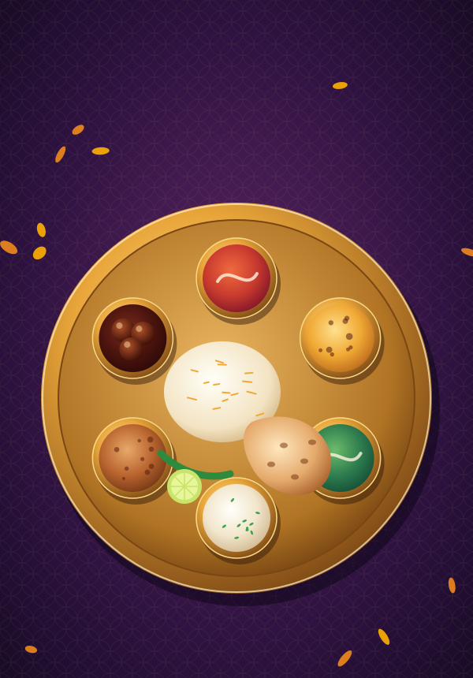
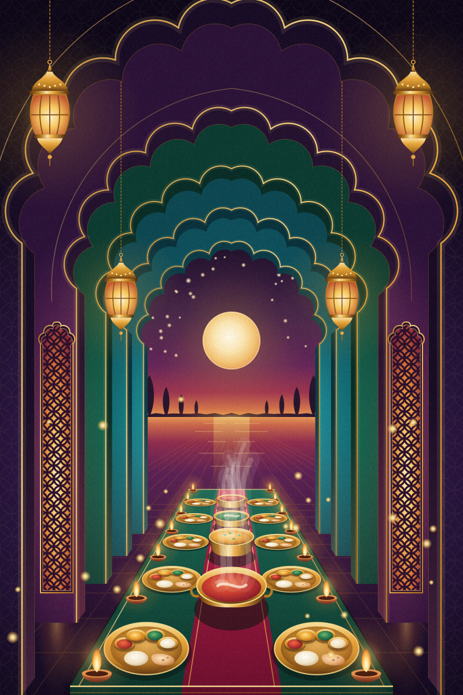

Direction B · Royal — signature hero
The Palace Dining Room at Dusk
Five cusped arches step back in plum, emerald and peacock toward one warm, plain moon-glow. Lanterns sway, diyas flicker, steam curls off the kadai. Move your pointer (or scroll) for gentle depth.


Compositions
One scene, recomposed for every screen
Each file is a single self-contained SVG with its own CSS motion (honours reduce motion), under 80 KB.


Layer stack · back to front
Twelve transparent layers, one viewBox
Every layer keeps the full 1600×1000 (or 800×1200) viewBox, so they stack pixel-perfect. Shift each one by its depth for parallax.
Arch-frame mask
Any dish photo, framed like a palace window
Same cusped profile as the hero arches. Use the SVG mask, the pure-CSS polygon, or the inline clipPath in arch-frame.css.

.cd-arch · SVG mask
.cd-arch--clip · CSS polygon + trim/* arch-frame.css — drop any image into an arch window */ .cd-arch { aspect-ratio: 400 / 645; overflow: hidden; -webkit-mask: url(arch-frame.svg) center / 100% 100% no-repeat; mask: url(arch-frame.svg) center / 100% 100% no-repeat; } .cd-arch > img { width: 100%; height: 100%; object-fit: cover; } /* no extra file? use the generated polygon instead */ .cd-arch--clip { clip-path: polygon( … see arch-frame.css … ); }